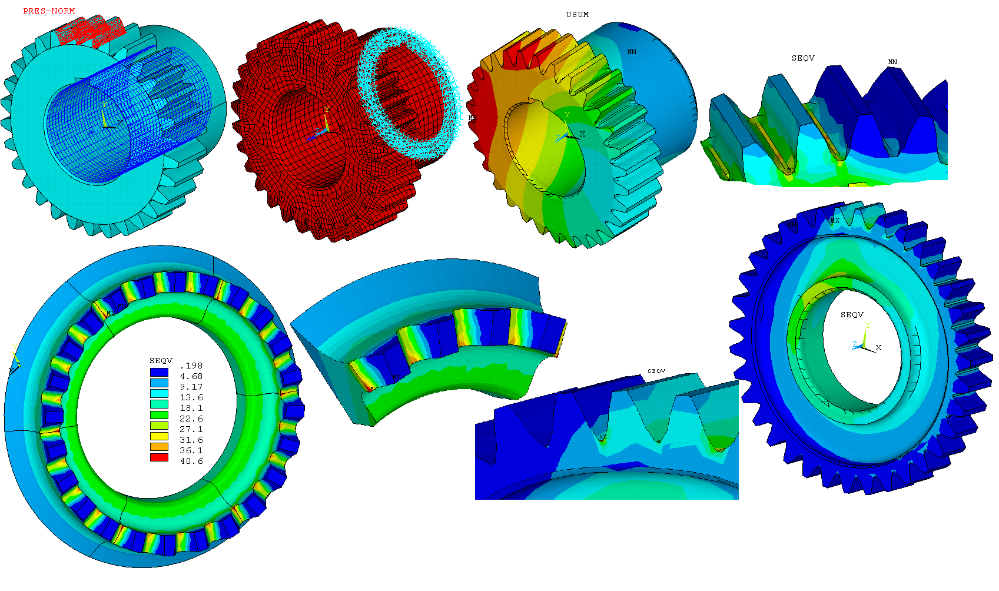

Solving mechanical problems by numerical method
Structural strength is a mandatory requirement when designing products. In any industry, engineers ask themselves the same fundamental questions: “How long will this product last for daily use?”, “Under what conditions will it break?” And many others.
And there is an infinite number of questions "What if ...", for example: "What will happen if you reduce the thickness of this rib by 1 mm to save material?"
Solutions for the mechanics of a deformable solid, using in particular ANSYS Mechanical, allow us to solve similar problems.

Our team solves the following types of tasks:
• strength analysis - static
• stability:
- linear• dynamic: - transient analysis
- nonlinear
- modal analysis• super elements
- harmonic response
- spectral response
- random vibrations
• form optimization
• contact tasks:
- slip separation• thermal analysis:
- friction - seals
- stationary• thermal models:
- transitional
- conductivity
- convection
- radiation
- thermal / strength
Static calculations
As a typical application of static calculations can be identified :
• Calculations of parts under load, taking into account the nonlinear response of materials.
• Solving contact problems: calculating seals, shaping and modifying, calculating gear joints and couplings, modeling bolted joints, etc.
• Determining the stress-strain state of structures caused by heating or cooling. ANSYS Mechanical is certified in many industries, which guarantees high quality and accuracy of calculations and a high degree of verification of the obtained results with experimental data.
Some examples of solved issues but our team
Static strength of the bus body
Static strength of gearing elements
The static strength of a bolted joint in a non-linear formulation
Static strength of the installation to determine the thermal pressure
Static strength of one type of intermediate spline roller
Static strength cutting tool (mill)
Static strength capacity from internal pressure
Dynamic calculations
Resonance is one of the most dangerous phenomena in technology.
The ability to find out the composition of the natural frequencies of the structure allows to avoid the appearance of resonance, ensuring high reliability of the design and long service life.
To solve this problem, the possibility of a modal analysis is realized - analysis of the natural frequencies and vibrational modes of structures.
These are the most important dynamic characteristics of each mechanical system, and it is with their definition that any dynamic calculation of structures begins.
The first forms of natural vibrations of the bus body
Gearing elements vibrations shapes
Thermal calculations
• As a rule, the main goal of heat exchange problems is to determine the temperature fields and heat fluxes, both in individual parts and in whole structures.
• We simulated 3 types of heat exchange: thermal conductivity of an isotropic or orthotropic material, convective heat transfer and heat transfer by radiation with the environment.
Finite element motor model with flywheel
Pressure distribution on the pump impeller
Control of all design stages
Structural analysis of the scene frame
Efficient calculation of large models
Due to the possibility of performing parallel calculations in software products, the entire calculation process takes place in parallel mode. Additional in-depth techniques, such as cyclic symmetry analysis, sub-modeling techniques, also help to work effectively with large models
Interdisciplinary analysis scheme
The choice is obvious
Finite element modeling reduces the number of physical prototypes and tests,
which accelerates the return on investment by reducing development time and also contributes to the development of a more flexible information-based development process and leads to the creation of innovative and high-quality products and production processes.
This leads to a transition to a higher level of product launch into the market in less time and with less cost.
To remain competitive, to meet customer needs,
to develop reliable innovative products, while reducing design steps, developers and engineers need modeling tools that provide reliable and accurate integrated solutions.